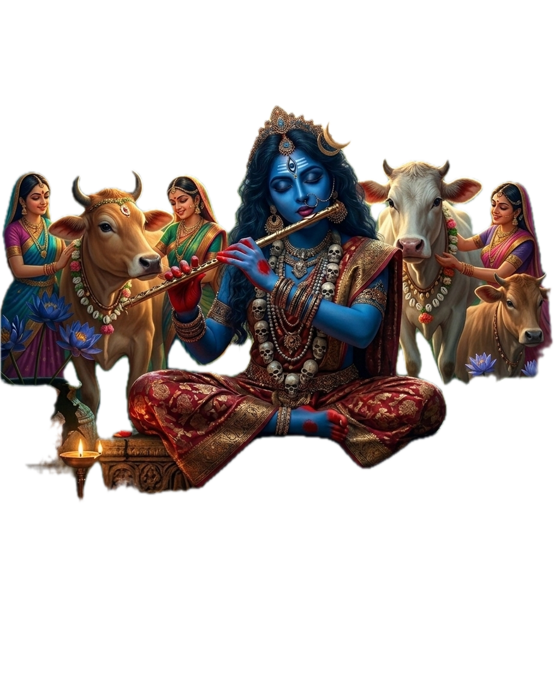
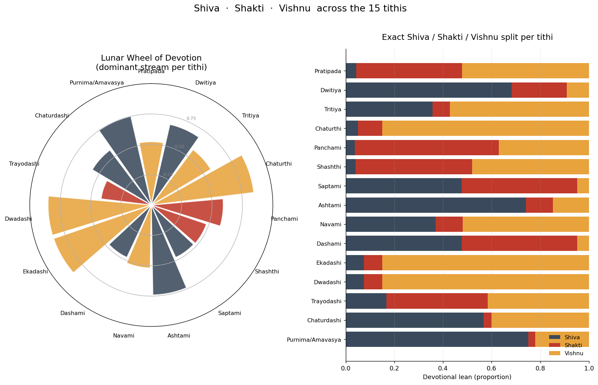

The Lunar Wheel of Devotion: Which Tithi Belongs to Shiva, Shakti, or Vishnu?
Jai Shree Ganesh. Open any panchanga and you will find the lunar month divided into thirty fragments — fifteen in the bright fortnight (shukla paksha) and fifteen in the dark (krishna paksha). Each fragment is a tithi, the time it takes the moon to gain or lose twelve degrees on the sun. We treat tithis as calendar slots: Krishna's birth on the eighth, Rama's on the ninth, Shiva's great night on the fourteenth. But the older texts insist the tithi is not a slot. It is a unit of moon-mind — chandra-manas — and each one already belongs to a god.
This post asks a simple question. If we take the canonical assignment of presiding deities (the tithi-swami) from a classical scriptural source — the Narada Purana 56.133b–135 — and project those deities onto the three great streams of Hindu devotion (Shaiva, Shakta, Vaishnava), what do we see? Does the lunar month lean? Does it have a rhythm?
It does. And the rhythm is striking.
What the Narada Purana actually says
Most modern panchangas list a single deity per tithi number — Pratipada → Brahma, Ekadashi → Vishnu, Chaturdashi → Shiva, and so on. That list is real, but it is a synthesis shaped by the lived devotional tradition (Vrats, Jayantis). The older scriptural picture is paksha-specific. The Narada Purana gives a different deity for each tithi in each paksha. Thirty entries, not fifteen.
Here is the full Narada Purana mapping:
| # | Tithi | Shukla paksha (waxing) | Krishna paksha (waning) |
|---|---|---|---|
| 1 | Pratipada | Brahma | Durga |
| 2 | Dwitiya | Agni | Dandadhara |
| 3 | Tritiya | Virinchi (Brahma) | Shiva |
| 4 | Chaturthi | Vishnu | Vishnu |
| 5 | Panchami | Gauri | Hari (Vishnu) |
| 6 | Shashthi | Ganesha | Ravi (Surya) |
| 7 | Saptami | Yama | Kaama |
| 8 | Ashtami | Sarpa (Naga) | Shankara (Shiva) |
| 9 | Navami | Chandrama | Kalaadhara |
| 10 | Dashami | Kartikeya | Yama |
| 11 | Ekadashi | Surya | Chandrama |
| 12 | Dwadashi | Indra | Vishnu |
| 13 | Trayodashi | Mahendra (Indra) | Kaama |
| 14 | Chaturdashi | Vaasava (Indra) | Shiva |
| 15 | Purnima / Amavasya | Naga | Pitrs |
Notice what this is not. It is not the popular "Ekadashi belongs to Vishnu" list. The Narada Purana puts Surya on Shukla Ekadashi and Chandra on Krishna Ekadashi. It puts a small army of Vedic devas — Indra, Mahendra, Vaasava — on the Shukla paksha tithis 12-14, and reserves Shiva for Krishna paksha Tritiya, Ashtami, and Chaturdashi. The popular tradition's Vishnu-on-Ekadashi and Shiva-on-Chaturdashi assignments come from Vrat reinforcement (the Ekadashi fast, Maha Shivratri), not from this scriptural list.
That mismatch is the whole point of the post. The wheel below combines both: scriptural swami as the base, lived Jayanti as the modulator. Both belong on the wheel.
The three streams
The trifurcation Shiva–Shakti–Vishnu is the broadest doctrinal partition of Sanatana devotion. The Shaiva tradition centers on Shiva as supreme — consciousness, asceticism, dissolution. The Shakta tradition centers on the Goddess as the source of all manifestation — power, generation, fierce protection. The Vaishnava tradition centers on Vishnu as preserver, descending in successive avatars to keep dharma alive.
These streams overlap. Hanuman is a Shaiva-Vaishnava bridge. Lakshmi-Narayana folds Shakti and Vishnu into a single household. Ardhanarishvara is half Shiva, half Shakti in one body. Radha and Sita are Devi-aspects in Vaishnava theology. The lines blur in practice, but the three names label real centers of gravity, and the lunar month inherits them.
How the lean is computed
The thirty Narada Purana deities are projected onto the three streams via a folding table. Then for each of the fifteen tithi numbers, the Shukla and Krishna deity contributions are averaged. Then Jayanti reinforcements are layered on top. The result is a (Shiva, Shakti, Vishnu) tuple summing to 1.0 for each tithi.
Folding rules (deity → stream):
- Vishnu stream: Brahma, Virinchi, Vishnu, Hari, Surya, Ravi, Indra, Mahendra, Vaasava, Chandrama. Rationale: creator–preserver continuity (Brahma); solar–Vaishnava overlap (Surya as Vishnu-aspect); Vedic deva-king class (Indra-family) as manifest preservation; Chandra via the Chandra-vamsha of which Krishna is the apex.
- Shiva stream: Shiva, Shankara, Yama, Dandadhara, Kalaadhara, Pitrs, Naga, Sarpa. Rationale: Yama and Pitrs as dissolution; Naga as Shiva's ornament; Kalaadhara (time-bearer) as a Shiva epithet.
- Shakti stream: Durga, Gauri, Ganesha, Kartikeya, Kaama. Rationale: Devi directly; Ganesha and Kartikeya as Devi's sons / Shiva-Shakti household; Kaama as desire / generative power.
- Split: Agni → 50/50 Shiva and Shakti (sacrificial fire is between them).
Base score per tithi. Each paksha contributes 0.50 to its deity's stream (or splits across streams if the deity folds to a split). So the base sums to 1.0 already.
Jayanti contributions added on top. Pan-Hindu festivals (Maha Shivratri, Krishna Janmashtami, Ram Navami, Buddha Purnima, Vaikuntha Ekadashi) add 0.15 to their stream. Avatar Jayantis (Matsya, Kurma, Varaha, Narasimha, Vamana, Parashurama, Balarama) add 0.10 each. Devi/Shakta vrats (Durga Ashtami, Maha Navami, Saraswati Puja, Hartalika Teej, Naga Panchami, Lalita Panchami, Skanda Shashthi, Ganesh Chaturthi) add 0.10 each. Monthly recurrences add 0.20 — these are the Vrats baked into the lunar cycle itself: every Ekadashi (Vishnu), every Trayodashi (Pradosh, Shiva), every Krishna Chaturdashi (Masik Shivratri, Shiva). Cross-stream Jayantis (Hanuman, Sita, Radha, Sharad Purnima Lakshmi-Vishnu) split their weight 50/50 between the two streams they bridge.
Floor and cap. Any zero stream is floored at 0.05 — every tithi has some presence of all three. After the floor, the tuple is normalized to sum to 1.0. Any single stream is then capped at 0.85, with the excess redistributed proportionally to the others. No tithi reads as monolithic.
The full input data — every tithi, every Jayanti counted, every weight — is published alongside this post as tithi-data.csv and the script that produces the wheel as make_tithi_wheel.py. Disagree with the folding or the weights? Edit them and re-run.
The plot

Left: each spoke is a tithi, colored by its dominant stream — ash-blue for Shiva, crimson for Shakti, saffron for Vishnu. Spoke length is the strength of that lean. Right: the exact Shiva/Shakti/Vishnu split per tithi, stacked.
→ Open the interactive wheel — hover any tithi to see its Narada Purana deities for both pakshas, the exact (Shiva, Shakti, Vishnu) split, and every Jayanti that lands on it.
The dominant distribution across the fifteen tithis: six Shiva, six Vishnu, three Shakti. The lunar month is balanced between Shaiva and Vaishnava, with Shakta as the smaller but unmistakable minor stream — and the three Shakta tithis (Panchami, Shashthi, Trayodashi) cluster on the same side of the wheel.
Reading the wheel
Four patterns are visible at a glance.
Vishnu owns the digestive middle. Chaturthi, Ekadashi, and Dwadashi all pin near the 0.85 cap of Vishnu — these are the Vishnu-monopoly tithis. Chaturthi is Vishnu in both pakshas of the Narada Purana (the popular Ganesh Chaturthi adds Shakti, but cannot overcome the doubled scriptural base). Ekadashi gets the systemic Vrat recurrence (every Ekadashi, twice a month, twenty-four times a year). Dwadashi is Vishnu in Krishna paksha and gets Vamana Jayanti and Tulsi Vivaha on Shukla. The middle of the lunar arc is the Vishnu region.
Shiva owns the closing tithis. Ashtami, Chaturdashi, and Purnima/Amavasya all read Shiva-dominant. Ashtami is doubled Shiva at the base (Sarpa in Shukla, Shankara in Krishna) — even Krishna Janmashtami and Durga Ashtami together cannot pull it off Shiva. Chaturdashi is Vaasava in Shukla but Shiva in Krishna, and the systemic Masik Shivratri plus annual Maha Shivratri push it firmly Shaiva. Purnima/Amavasya combines Naga (Shukla, Shiva-stream) and Pitrs (Krishna, Shiva-stream) — the wheel's most monolithically Shaiva tithi. Vishnu's Buddha Purnima and Kurma Jayanti modulate it, but cannot turn it.
Shakti claims the generative tithis. Panchami (Gauri + Hari, with Saraswati Puja, Naga Panchami, Lalita Panchami all reinforcing Shakti) is the cleanest Shakta tithi. Shashthi balances Ganesha and Surya, with Skanda Shashthi tipping Shakti. Trayodashi has the Pradosh Vrat counterweight pulling Shaiva, but the Krishna paksha Kaama base and the absence of major Vishnu Jayantis lets Shakti pull through. These are the tithis where something new is brought forth — desire, knowledge, the goddess's son.
The "popular" Ekadashi-Vishnu and Chaturdashi-Shiva mappings are reinforcements, not bases. This is the most interesting finding. The Narada Purana does not put Vishnu on Ekadashi (it puts Surya and Chandra). The Narada Purana puts Shiva only on Krishna Chaturdashi (Vaasava on Shukla). The popular tradition's confidence that "Ekadashi is Vishnu's day, Chaturdashi is Shiva's day" comes from the systemic Vrat reinforcement — the every-Ekadashi fast, the every-Krishna-Chaturdashi Masik Shivratri, the annual Maha Shivratri at its peak. The lived devotional consensus overruled the scriptural list, and the wheel records that overruling honestly: Ekadashi reads Vishnu only because the Vrat recurrence is a 0.20 reinforcement; Chaturdashi reads Shiva only because the systemic Shivratri recurrence and the annual Maha Shivratri together overpower the Shukla-paksha Vaasava base.
Paksha nuance: same tithi, different face
The wheel above plots fifteen tithis. The lunar month has thirty. Most tithis behave the same in both pakshas; some flip dramatically. The Narada Purana exposes this clearly.
- Tritiya. Shukla = Brahma (Vishnu-stream); Krishna = Shiva. The same number flips streams across pakshas. The wheel averages and shows a Vishnu-leaning Tritiya, but the dark-half Tritiya is Shaiva.
- Saptami. Shukla = Yama (Shiva); Krishna = Kaama (Shakti). Yama and Kaama are theological opposites — death and desire — sharing a tithi number but split across pakshas.
- Ashtami. Both pakshas Shiva (Sarpa, Shankara). But the Jayantis are stream-flipped: Shukla Ashtami of Bhadrapada is Radhashtami (Vishnu-Shakti cross-stream); Krishna Ashtami of Bhadrapada is Krishna Janmashtami (Vishnu); Shukla Ashtami of Ashwin is Durga Ashtami (Shakti). Same tithi, different month, different stream.
- Ekadashi. Both pakshas non-Vishnu in Narada Purana (Surya / Chandra). The Vrat tradition installs Vishnu in both pakshas — every Ekadashi, both pakshas, is a Vishnu day in lived practice. The scriptural list and the lived list flatly disagree. The wheel takes the lived consensus seriously by counting the systemic Vrat as a +0.20 reinforcement.
- Chaturdashi. Shukla = Vaasava (Vishnu-stream Vedic deva); Krishna = Shiva. The systemic Masik Shivratri lives only in Krishna paksha; Maha Shivratri itself is Krishna paksha (Phalguna). The Vishnu Jayanti on Shukla Chaturdashi (Narasimha) creates real cross-stream tension. The wheel reads Shiva-dominant on the averaged tithi, but Shukla Chaturdashi specifically would read Vishnu in some months.
- Purnima vs Amavasya. They share spoke #15 in the wheel but are theologically opposite. Purnima holds Buddha Jayanti, Kurma Jayanti, Hanuman Jayanti, Sharad Purnima Lakshmi — Vaishnava and Shakta reinforcements. Amavasya holds Mahalaya (Pitr Paksha) and many minor Shaiva observances. The Narada Purana base is Shiva-stream for both (Naga + Pitrs), but the Jayanti-reinforced reality is split. The wheel collapses this.
The rule of thumb: the swami belongs to the (paksha, tithi-number) pair, not just the tithi-number. The wheel captures the average; the reinforcements modulate it. To know which deity owns a specific day in a specific month, you have to consult the panchanga, not the wheel.
Sources and caveats
Every claim in this post is sourced. The full list:
- Narada Purana 56.133b–135 — Tithi Devatas (via Medium / Thoughts on Jyotish) — the scriptural source for the paksha-specific deity list.
- Tithi article on Wikipedia — base reference for the tithi as an astronomical and calendrical unit.
- Panchangam article on Wikipedia — the five-limb Hindu calendar; tithi is the first limb.
- Clickastro — Tithi list and presiding deities — the alternative "Brihat Samhita-derived" classical list (Pratipada=Brahma, Tritiya=Vishnu, Ekadashi=Rudra, Chaturdashi=Kali). Used as a triangulation source.
- Astrojyoti — The 16 Tithis — second triangulation source, aligns with Clickastro on the classical list.
- Rama Navami (Wikipedia) — confirms Ram Navami = Shukla Navami of Chaitra.
- Dashavatara (Wikipedia) — base reference for the ten-avatar list whose Jayantis populate the Vishnu-stream reinforcements.
- Ekadashi (Wikipedia) — confirms the every-Ekadashi-is-Vishnu Vrat tradition.
- Shaivism, Shaktism, Vaishnavism — base references for the three streams.
A few honest caveats.
The Narada Purana mapping is one of several scriptural lists. A Brihat Samhita-derived list (reported by Clickastro and Astrojyoti) gives a different paksha-agnostic mapping where Pratipada is Brahma, Tritiya is Vishnu, Ekadashi is Rudra, Chaturdashi is Kali, and so on. The popular synthesis (Pratipada=Brahma, Ekadashi=Vishnu, Chaturdashi=Shiva) is yet a third list. This post chose the Narada Purana list because it is paksha-specific and scripturally rooted. Other choices would produce different wheels.
The folding is a projection, not a doctrine. Mapping Brahma into Vishnu, Surya into Vishnu, Yama into Shiva, Ganesha into Shakti — these are theological projections onto a three-axis basis. They are defensible. They are not unique. A Saura tradition would put Surya in his own stream. A Smarta tradition would refuse to fold at all and insist on the panchadeva (five gods, including Ganesha and Surya as their own centers). The published tithi-data.csv and make_tithi_wheel.py let you change the folding and recompute.
The weights are a spec, not a truth. 0.50 / 0.20 / 0.15 / 0.10 are choices. They are stable enough to produce a clear wheel; they are not derived from any sacred text. Recompute with your own weights and the broad pattern — Vishnu in the digestive middle, Shiva in the closing tithis, Shakti on the generative ones — will survive. The fine details will change.
This is a systematized reading, not a doctrinal claim. Different sampradayas weight Jayantis differently. A Vaishnava reader will count more Jayantis than this post does (every Ekadashi has its own name and story). A Shaiva reader will count Pradosh and Sankashti Chaturthi as larger reinforcements than this post does. The wheel is one defensible projection. It is not the only one.
Closing
The lunar month is not a clock. It is a grammar. Every tithi has a deity already standing on it, and the deities are not distributed at random. The waxing half opens toward preservation through the avatars and the Vrats. The waning half closes toward dissolution through Pitrs, Pradosh, and the great night of Shiva. The thresholds — Tritiya, Panchami, Shashthi — belong to the goddess who brings what is new into being. Read the wheel slowly the next time you open a panchanga: the sequence Pratipada → Tritiya → Panchami → Saptami → Navami → Ekadashi → Trayodashi → Purnima is a complete movement — Brahma to Gauri to Saraswati-Naga to Yama-Kaama to Durga-Ram to Vishnu to Pradosh to Buddha — and it repeats every fortnight, twenty-four times a year, eight hundred or so times in an average lifetime.
The moon is a cycle of thirty fragments. Each one is already someone's. May the next time you look at it bring back the name.
Hari Om Tat Sat.